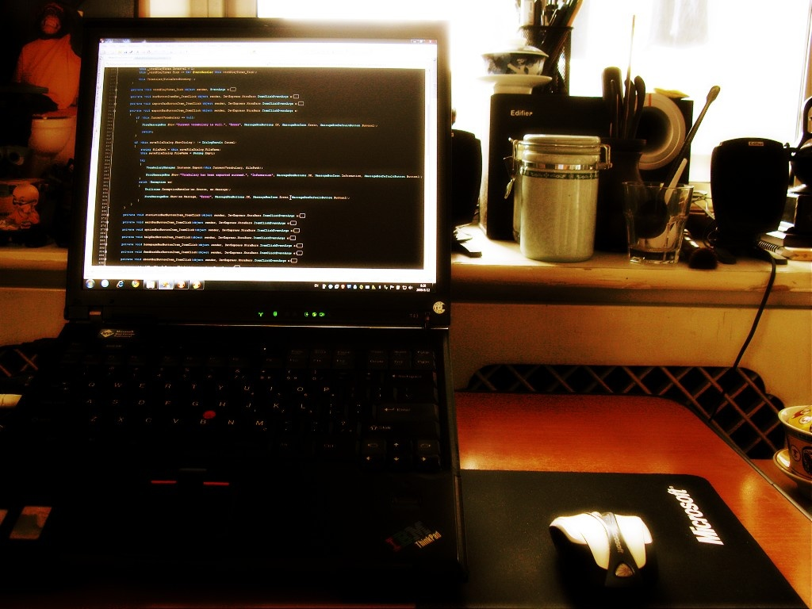
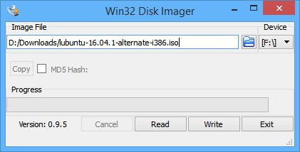
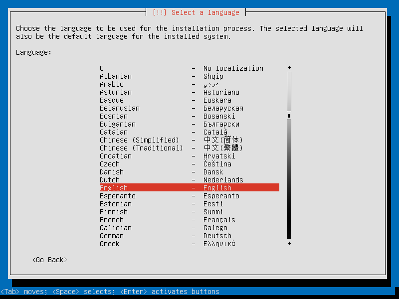
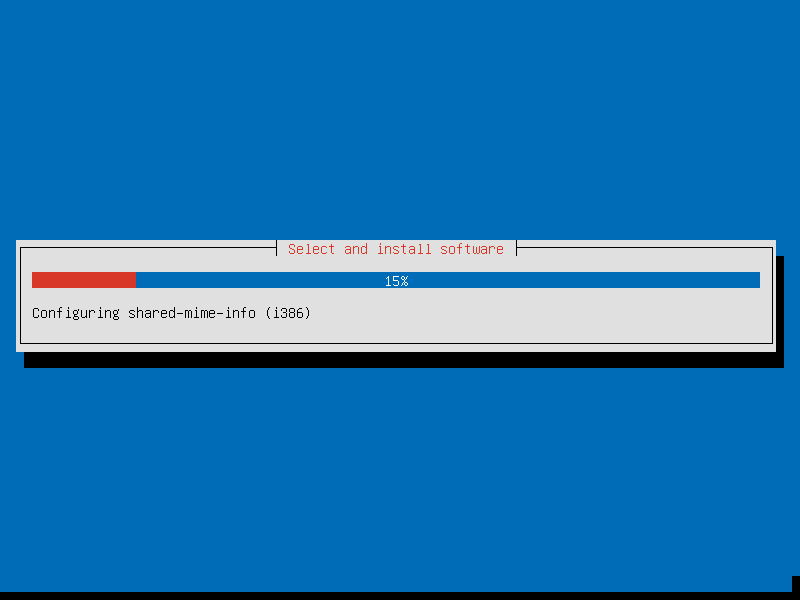
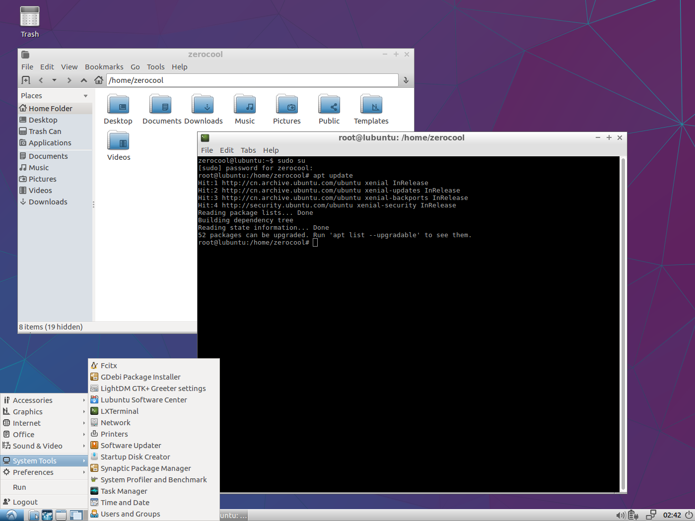
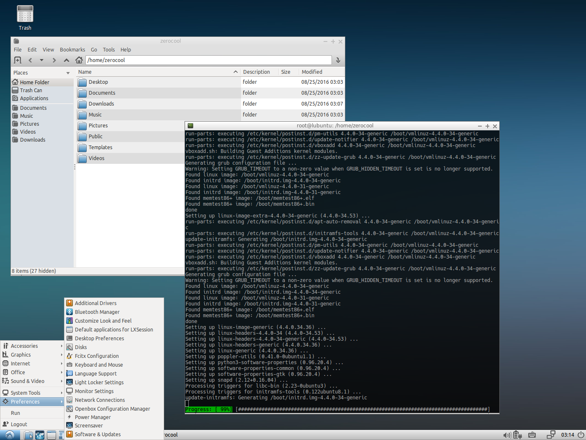
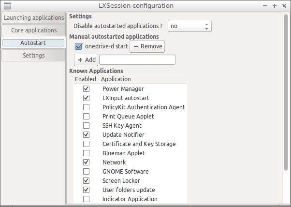

最近有部叫《黑客军团》（Mr. Robot）的戏比较火。目前第二季已经出到一大半了，深得技术宅和技术宅仰慕者们的喜爱。男主用的是 Kali Linux，这个发行版主要面向专业的网络安全和渗透测试，其实我也是看第一季的时候才知道 Kali，就不瞎白活了，感兴趣的话可以自行打探。
1 | /** |
 ThinkPad T43
我有台 T43。对，就上面这台。挺老了，有多老呢？这张照片是 2009 年 8 月 22 号拍的，当时它将近 3 岁，我还是鲜肉的时节。
机器配置是 Intel 奔腾 M 2GHz、2G DDR2 内存、ATI RV370 显卡、分辨率 1400×1050、支持蓝牙，还有个当年飙升逼格的指纹识别。这个配置在当初来说还算拉风，关键是它还陪我走过一段“辉煌”的历史——微软 MVP 标识至今贴在机身上——所以一直舍不得扔。受 Kindle 的启发，打算找个轻量级 Linux 桌面发行版来让它继续发挥余热。试来试去，目前来看 Lubuntu 效果最理想。这个发行版是台湾一位叫洪任谕的程序员主导开发的，访问它的官网还得科学上网（可能同胞不小心把网站 host 在了敌对势力的 server 上了吧），呵呵，也可以从Ubuntu 的网站上获取安装镜像。
1 | /** |

先下载 Lubuntu 最新稳定版（V16.04.1 LTS），用 Win32 Disk Imager 写到 U 盘上，然后重启 T43，并隆重地选择开机 U 盘启动。

32 位版本不提供 GUI 安装界面和光盘试用方式
人穷志短，我装的是 32 位版本，安装引导界面跟 64 位发行版相比略显“专业”一点儿，其实步骤都是那些步骤，如果你是技术宅应该就没什么问题；如果你是技术宅仰慕者也不用担心，选择简体中文，然后下一步、下一步……，网络不好设置就跳过，装完之后直接到桌面环境去选你家 WiFi 就 OK。条件允许的话最好还是别学我，走正道装 64 位哪点不好呢。

趁系统安装这会儿功夫扯几句闲篇儿。要说现在这些桌面级 Linux 发行版，安装过程还真未必能难倒几个小白，跟 Windows 的八九不离十，无非就是选择分区的时候有点儿唬人，小心一点儿也没有过不去的坎儿。我这台 T43 没啥要备份的资料，也不打算安装别的系统，所以直接让它占用整个硬盘，倒也省事儿。
最早接触 Linux 是在 03 年，不记得用的第一款是什么发行版了，第一个印象比较好的是 Mandrake，也用过 Red Hat、SuSE……那会儿还在读书，本着没事儿瞎折腾的学习态度，电脑里经常会保留一点儿空间给 Linux。那个年代，Linux 阵营动不动就嚷嚷要瓜分 Windows 的桌面市场份额，时不时的也会有些比较骚气的极客发点儿帖子教导大家“弃暗投明”。我一般是骂骂咧咧地体验一阵儿，然后又回到 Windows 的怀抱，过阵子再骂骂咧咧地体验一阵儿。现如今，俩阵营的嘴仗渐渐少了，极客们也玩儿别的去了，风向变成了“苹果面前谁也别嘚瑟”，纳德拉还喊出了“微软爱 Linux”这么矫情的口号……还真别说，Linux 桌面版反而变得漂亮又好用了！

安装完成并重启之后，上前一步进到系统中来，果然轻量级。Lubuntu 使用的是LXDE 桌面系统（对哦，Lubuntu ＝ LXDE ＋ Ubuntu），给人的第一印象不仅不难看，反而有些返璞归真的感觉，不过审美是件很主观的事，萝卜白菜各有所爱。我个人觉得界面风格比较清新简洁，但总觉得字体很是彪悍，赶紧在开始菜单 → 首选项 → 自定义外观和体验、桌面偏好设置里面把所有字体大小从 11 降到 9，一下子感觉呼吸顺畅了许多。终端也要调整，不仅要调整字体大小，还要换成 Hack 字体、隐藏菜单栏、滚动条、光标闪烁、背景透明度降到 200，再换成《黑客军团》男主那呆滞木讷的眼神，这样才显得俺们像个黑客。

这样是不是感觉舒服多了？你还可以根据自己的喜好继续折腾样式，不过咱还得继续往下走。
首先，Linux 也会“捆绑”很多软件，不过捆得不死，用户可以很方便地卸载掉自己不需要的预装软件，比如 Lubuntu 预装的 AbiWord、Gnumeric、Pidgin Internet Messager、Simple Scan……因人而异，用不上又看着碍眼的，推荐在终端里面使用 apt 命令卸载掉（也可以用 apt-get，不过现在推荐使用前者了），因为每个人的需求不一样，我在这里只是简单介绍一下使用方式，就不具体给出卸载列表了，以免误伤。
1 | sudo su |
打开终端（开始菜单 → 系统工具 →LX 终端。右键菜单可选择将它放到桌面，地址栏里配置应用程序启动条也可以添加它的快捷方式），首先输入 sudo su 并回车，正确输入当前账户密码后即获得 root 权限，否则无法使用 apt 命令。然后输入 apt remove -y abiword 并回车，这一行的意思是使用 apt 包管理工具卸载掉 abiword，参数-y 表示用户已经确认可直接执行操作，否则 apt 检测到 abiword 确实存在的时候会停下来等待用户输入 y 才会开始卸载。之所以把-y 放在 abiword 前面，无非是为了方便后面卸载别的应用，你可以直接按上箭头调出上一次操作的命令，删掉末尾的 abiword，输入另一个需要卸载的应用名直接回车。当然，如果你头脑清晰，很明确自己要卸载哪些软件的话，也可以全部列在-y 后面，用空格隔开就好，比如：
1 | apt remove -y abiword xpad simple-scan |
有的软件的包名和你在桌面上看到的名字不一样，就像刚刚我们要卸载的 Simple Scan，你以为它叫 simplescan，其实它叫 simple-scan。像这种情况拿不准怎么办？好办，用下面这行命令来查找实际包名：
1 | apt list --installed *simple* |
这行命令是列出已安装的软件包中包名包含 simple 的软件，在前面也加通配符是因为有些包是以 gnome-或者别的什么前缀开头，你不加就查不到，防不胜防。
关于 apt 的具体使用方式，不妨用 apt -h 来查看说明文档，看不懂可以找找中文帖子，这里不细讲太多，再啰嗦两句： 1. 删了一些软件后可以用下面这行命令来回收一些硬盘空间：
1 | apt autoremove -y; apt clean; apt autoclean |
- 安装一些软件后还需要时不时地升下级：
1 | apt update; apt dist-upgrade -y |
- 如果你在 VirtualBox 里面跑 Lubuntu，安装 Guest Additions 时出错，多半是因为你没有安装 npm：
1 | apt install -y npm |
如果你明确知道自己要安装/卸载什么软件的话，apt 比“软件中心”那破玩意儿好用得多！
接下来列举几个软件，不用 apt，直接到它们的官网上下载安装包就行，其余的你们自己看着办吧。 1. 网易云音乐（业界良心）； 2. 搜狗拼音（可惜还不能同步账户内容）； * 记着在开始菜单 → 首选项 → 语言支持中将“键盘输入法系统”改为 fcitx； 3. Visual Studio Code（比记事本启动慢，非必需）； * 写代码的话用得上，也可以考虑ATOM或者Sublime Text； 4. WPS（如果需要处理点儿 Word 文档之类的）。
Lubuntu 预装 Firefox 浏览器，登录账户后可同步书签、密码啥的，很方便。现在你还在用的网站一般都忍辱负重地解决了各浏览器之间的兼容性问题，用一个 Tab 页打开微信网页版并将这个 Tab 页 Pin 起来，HTML5 支持桌面提醒，所以你也可以很方便地使用微信，Web QQ同理。
假如你对游戏不死心，可以安装 Steam、PlayOnLinux 或 Ubuntu GamePack。如果我没理解错的话，它们都是用 Wine 来跑 Windows 游戏软件。我不喜欢 Wine，T43 也跑不动像样的游戏，所以你们自己折腾吧。
在 Linux 上安装 Java 运行环境稍稍麻烦一点点，需要下面三行命令。常在河边走，哪能不湿脚，不管你喜欢不喜欢，反正用一阵儿 Linux 你总会遇到需要 Java 的时候。
1 | add-apt-repository ppa:webupd8team/java |
处理图片的话，推荐使用 GIMP Image Editor，跟 Paint.NET 差不多，不知道有没有 PhotoShop 专业，这方面我不懂我闭嘴。
1 | apt install -y gimp |
基本上就这些，配置完也够你玩一阵儿的了。还有个稍稍有点儿门槛的就是，还记得前面我提到过“微软爱 Linux”的口号么？假如你是 OneDrive 用户的话，不好意思，微软不提供 Linux 客户端，你需要去 GitHub 下载安装onedrive-d才能同步你的文件。安装好后可以在开始菜单 →LXSession 默认应用程序 → 自动启动中添加 onedrive-d start，这样每次启动系统后都可以自动同步 OneDrive 文件夹里面的内容了。

差点儿忘了，Flash Player 要通过开始菜单 → 系统工具 → 新立得软件包管理器来安装。打开管理器，搜索 flashplayer，结果中应该会出现 flashplugin-nonfree-extrasound，右键选择“标记以便安装”菜单项，点击“应用”，然后上个优酷看个视频啥的问题不大。
1 | 或者： |
T43 用的是单核处理器，再加上机械硬盘、内存不够大、只支持 32 位系统，年久老化，现在跑 Firefox 略显吃力（主要是我已经被自己的主力机惯坏了），如果你的配置稍稍好点儿 ，我推荐 Xubuntu，再好一些的话还可以考虑 Ubuntu Mate 或者 Linut Mint 等等。性能越好，可以选择的范围越大，但有时候太多可选也未必是好事。
写这篇碎碎念的主要目的就是分（xuān）享（xiè）。如果你是熟悉 Linux 的老鸟，那咱以文会友；如果你是蠢蠢欲动的新手，希望能对你有所帮助或启发。Lubuntu 本身还存在一些问题，比如回收站右键菜单没有“清空”项、fcitx 用户设置保存不住、图片文件右键菜单不支持直接设为桌面背景等等，但是在轻量级桌面这方面做得还是很不错的，存在这样的改进空间完全可以接受。
天已经开始亮了，就说这么多吧，明天——哦不，今天——起来之后校正几遍再发。对了，这篇文章我就是在 Lubuntu 上写的。